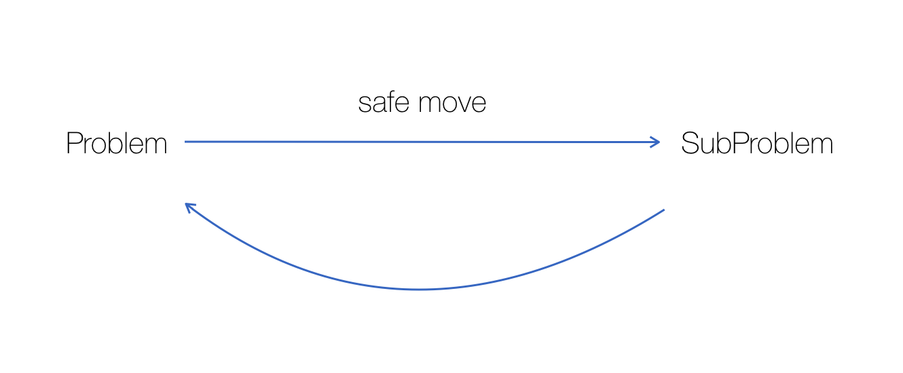
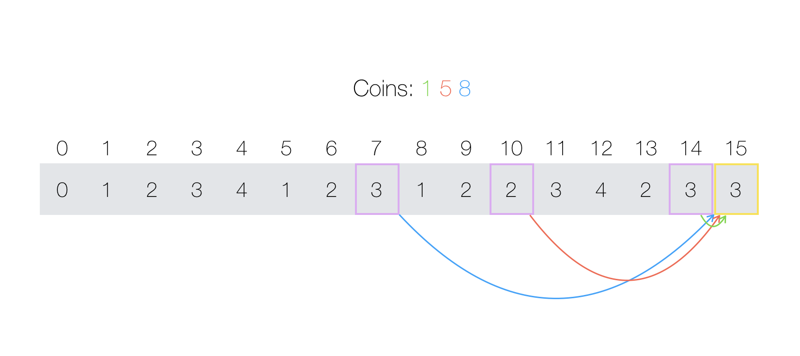
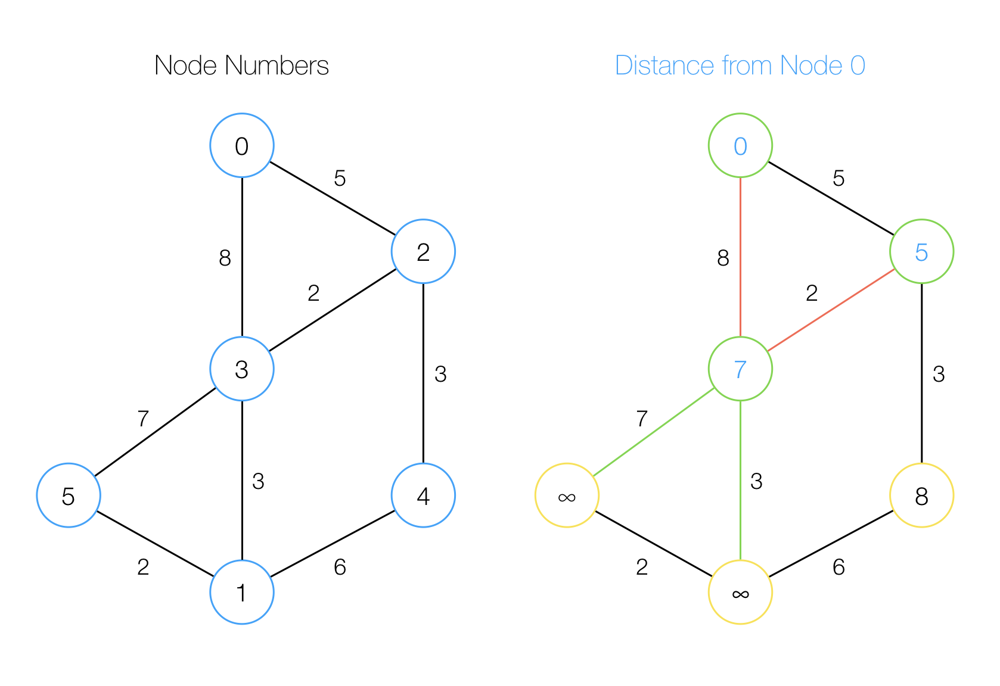
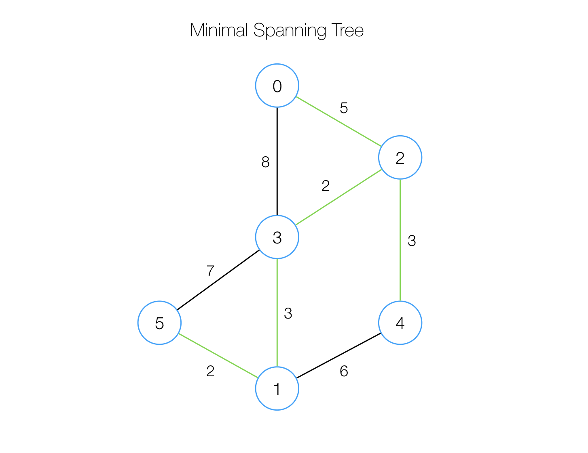

Competitive Programming
Resources
Training Resources
USACO offers its own training program with a collection of practice problems sorted by increasing difficulty (you cannot access harder problems without solving the easier ones first though). Supports C, C++, PASCAL, Python, and Java.
Kattis is another practice site that also allows users to host their own competitions. It has an extremely large collection of problems and you can do them in any order. It also has a leaderboard and shows each user's rank based on problems solved.
ASCII
An incomplete ASCII table with only parts that you actually need.
Competition Problem Techniques
Here is a short list of common techniques used to solve problems in programming competitions (from USACO Training).
Complete Search
A brute force solution that simply iterates over all possibilities to find the answer. These are usually easy to come up with and implement. However, sometimes it is difficult to recognize that this methodology can be applied to a certain problem. It might only become apparent after realizing some key insights.
Greedy Algorithms
As its name suggests, greedy algorithms always selects the best solution possible at each step. It breaks the task down into smaller subproblems of the same kind, and solves each of them in turn to build the solution. However, you must ensure that your selected solution is a "safe move". Often, the greedy moves are not "safe", therefore the greedy solution usually does not work on all test cases. However, when a greedy solution does work, it is usually easy to implement.
Example: fractional knapsack. Given a collection of items that you can put in a knapsack, their respective weights, values, amount available, and the maximum weight capacity of the knapsack, what is the maximum value that you can carry? You may pack fractional amounts of each item.
Analysis: in this problem (key point is fractional), the greedy solution is safe. Sort each item by their weight-to-value ratio and always select the item that has the highest value per unit of weight, until it runs out.
Dynamic Programming
The principle behind dynamic programming is still to break the task down to smaller subproblems, and then build up to a final solution. A technique known as memoization (not memorization) enables you to create dynamic programming solutions that run quickly by storing previous results.
Example: coin change. Given a collection of coin values and the amount of money to change, find the minimum number of coins needed to make the change.
Analysis: an obvious solution would be to use a greedy algorithm. At each step, take the largest valued coin available. However, although this works on some coin systems (1, 5, 10, 25), it will fail on others. The dynamic programming solution computes all minimum number of coins from changing 0 cents to the amount desired. At each step, it uses previously computed results to determine the next value.
In the above image, when computing the minimal number of coins needed to represent 15, we consider using the 3-coin combination for 7 plus the coin that is worth 8, the 2-coin combination for 10 and adding another 5, or the 3-coin combination for 14 and adding a 1. In this case, the second option is optimal and uses only 3 coins total (3 fives).
Dijkstra's Algorithm
Dijkstra's algorithm finds the distance of all nodes in a graph to a certain starting node. It runs in O(E log V) time when using a heap and O(V2) time without (E is the number of edges in the graph and V is the number of vertices). However, it cannot handle a graph with negative edge weights.
It does the work by the technique relaxation. It considers a path from nodes, the starting node, to nodei through a third node that is being processed (nodex). If the path from nodes to nodex and then to nodei is shorter than the current path from nodes to nodei, then the algorithm updates the distance information for nodei, for a better path is found. At each step, the algorithm selects nodex which has the least distance to the source node that has not been processed already. The distance for this node will be its final distance. The algorithm then updates distances for nodes adjacent to this node, if a better path through this node can be found.
In the image, node 3 is being processed (it has distance 7 to the source node 0). The four edges attached to it are considered, and the edges with weights 7 and 3 will successfully decrease the distance to nodes 5 and 1. Therefore the algorithm will update the distance to node 5 and 1 from infinity to 7 and 3, respectively.
Floyd-Warshall Algorithm
This miraculous algorithm calculates the distance between all pairs of nodes in O(V3) time with just a couple lines of code.
Prim's Algorithm
This algorithm finds a minimal spanning tree given a graph greedily. At each step it adds in the closest node to the current tree.
